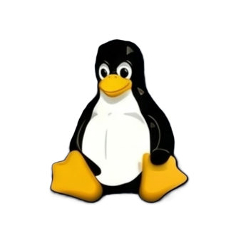

Linux is a free, open-source kernel originally written by Linus Torvalds — today, paired with GNU tools and packaged into hundreds of distributions, it powers servers, smartphones, supercomputers, and embedded devices worldwide. This page covers where it came from, how it's structured, what it's used for, and where to learn it properly.

That's the literal line Linus Torvalds used to announce Linux. It's one of the most famously wrong sentences in software history.
In 1991, Linus Torvalds was a computer science student at the University of Helsinki, frustrated with the licensing limits of MINIX, a small Unix-like teaching OS. On August 25, 1991, he posted to the comp.os.minix newsgroup announcing a free operating system kernel he was building for his own 386 PC — explicitly calling it "just a hobby, won't be big and professional like GNU." Version 0.01 followed on September 17, 1991.
A kernel alone isn't a usable operating system — it needs compilers, shells, and utilities around it. That's where Richard Stallman's GNU Project came in: by 1991 GNU had built almost an entire free Unix-like system, but its own kernel (Hurd) wasn't ready. Pairing the GNU tools with Torvalds' kernel created a complete, usable operating system — which is why some communities prefer the name GNU/Linux.
In 1992, the kernel was relicensed under the GNU General Public License — a decision Torvalds himself has called the best he ever made, since it guaranteed Linux would stay free and openly modifiable forever. That same year, the first distributions (complete, installable packages of the kernel plus software) began to appear. Slackware launched in 1993 and is still maintained today; Debian followed later that year. Linux 1.0 shipped in March 1994 with roughly 176,000 lines of code. A decade later, Ubuntu (2004) made Linux dramatically more approachable for non-technical desktop users, and Google's Android, built on the Linux kernel, went on to become the most-used operating system on Earth by device count.
A common confusion: "Linux" technically names just the kernel — the core program managing hardware. Everything else is layered on top by a distribution.
The kernel alone only talks to hardware. A distribution (Ubuntu, Fedora, Debian, Arch...) is the kernel plus GNU tools plus a package manager plus, usually, a desktop environment — bundled and configured into something installable.
Source code is public and freely modifiable under the GPL — anyone can inspect, change, and redistribute it.
Designed from the ground up for many users and processes running securely and simultaneously, like classic Unix.
Tools like apt, dnf, and pacman install, update, and remove software along with their dependencies automatically.
A text command interface (commonly Bash) that lets users script and automate nearly anything the system can do.
Everything — devices, configs, processes — appears as a file under a single unified tree starting at /.
A strict owner/group/permission system controls exactly who can read, write, or execute every file and resource.
Linux rarely shows up as a "desktop OS" for most people — it shows up as the invisible foundation underneath almost everything else.
The majority of the world's websites and virtually all major cloud platforms (AWS, Azure, GCP) run on Linux servers.
Android, built on the Linux kernel, is the most widely used operating system on the planet by number of active devices.
Linux runs on essentially all of the world's top 500 supercomputers, thanks to its scalability and low overhead.
Routers, smart TVs, cars, and industrial controllers commonly run stripped-down Linux builds for reliability and small footprint.
Most developer tooling, containers (Docker), and CI/CD pipelines are built around and for Linux environments natively.
Distributions like Ubuntu, Linux Mint, and Fedora offer a free, customizable alternative to Windows and macOS for everyday use.
From total beginner command-line basics to deep dives into kernel internals.
A free, official, self-paced course covering everything from the shell to system administration basics.
A friendly, visual, browser-based path through the command line, permissions, and networking.
Official documentation straight from the Linux kernel project for those who want to go deep.
A hands-on wargame that teaches Linux command-line fundamentals through solving small puzzles via SSH.
A classic, thorough free guide covering installation, the shell, and system administration.
A directory and comparison tool for the hundreds of active Linux distributions, useful when choosing one.